Zircon: The Brilliant Gemstone of Timeless Beauty and Durability
Chemical Formula: ZrSiO₄ (Zirconium Silicate)
Color: Various (Blue, Colorless, Yellow, Red, Green, Brown)
Hardness: 7.5 on the Mohs scale
Crystal System: Tetragonal
Refractive Index: 1.92 - 1.98
Density: 4.6 - 4.7 g/cm³
Localities: Sri Lanka, Cambodia, Australia, Tanzania, Myanmar
Common Uses: Jewelry, Scientific Research, Industrial Applications
Zircon is a remarkable and highly esteemed gemstone known for its brilliant luster, exceptional fire, and wide range of colors. Composed primarily of zirconium silicate (ZrSiO₄), zircon has been cherished for centuries and is often mistaken for diamond due to its incredible sparkle and dispersion. Beyond its beauty, zircon is also of significant geological importance, with some specimens being the oldest known minerals on Earth, offering valuable insights into the planet's early history.
The name "zircon" is believed to derive from the Persian word "zargun," meaning "gold-colored," though zircon naturally occurs in various hues including blue, red, yellow, green, brown, and colorless. Zircon is the traditional birthstone for December and symbolizes prosperity, honor, and wisdom. Its durability and brilliance make it a popular choice in all forms of jewelry, from classic to contemporary designs.
Formation and Types of Zircon
Zircon forms in a variety of geological environments, typically crystallizing from magma in igneous rocks such as granite and syenite. It can also form in metamorphic rocks and is commonly found in alluvial deposits due to its high resistance to weathering. The gemstone's color variations are a result of trace impurities and radiation exposure over geological time.
Blue Zircon
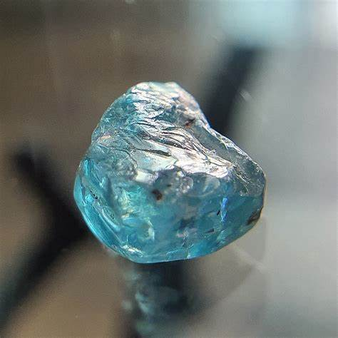The most popular and valuable variety, blue zircon is typically produced through heat treatment of brownish-red zircon. It ranges from light sky blue to deep vibrant blue and is highly prized for its brilliance and color.
Colorless Zircon (Matura Diamond)
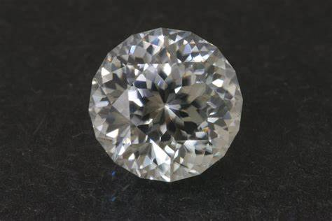Known for its exceptional brilliance and fire, colorless zircon closely resembles diamond and has been used as a diamond substitute for centuries. It is naturally occurring but can also be produced by heat-treating other color varieties.
Golden Yellow Zircon
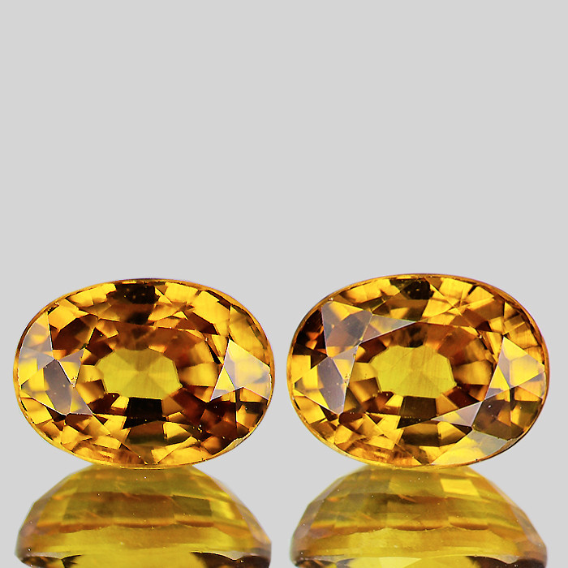Exhibiting warm, honey-like hues, yellow zircon is admired for its rich color and high refractive index, making it exceptionally sparkly.
Red Zircon
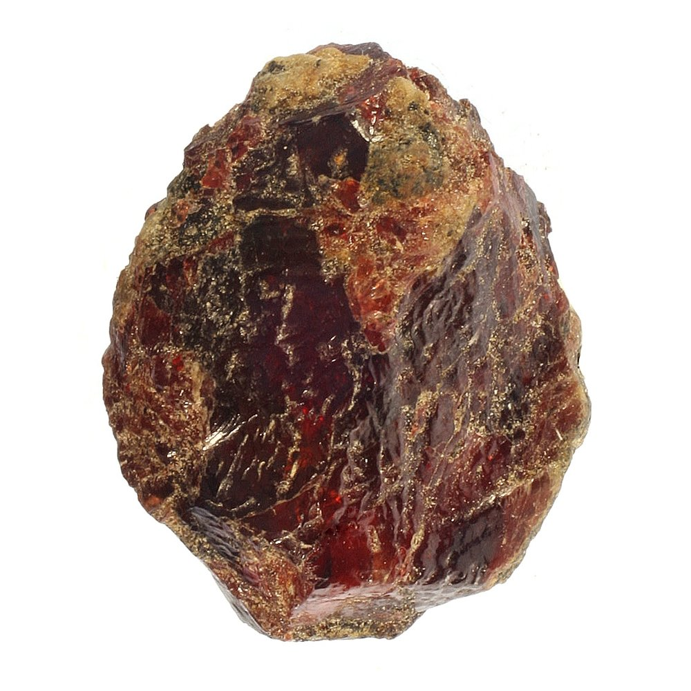One of the rarest and most valuable zircon colors, red zircon ranges from pinkish-red to deep crimson and is highly sought after by collectors and connoisseurs.
Green Zircon
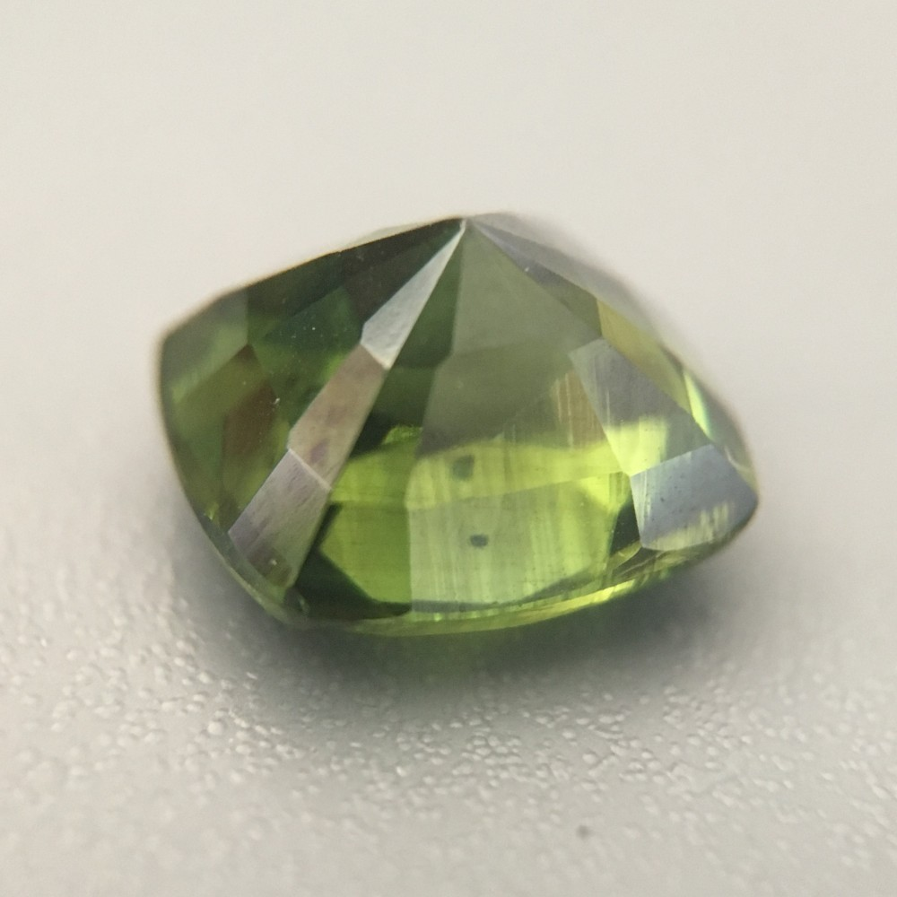Ranging from pale to vivid green, this variety is relatively rare and often exhibits strong pleochroism, showing different colors when viewed from different angles.
Brown Zircon
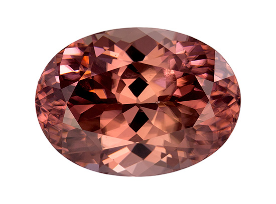Commonly found and often used as a starting material for producing other colors through heat treatment. Brown zircon can also be attractive in its own right, exhibiting earthy tones and good brilliance.
Structure and Properties of Zircon
Zircon belongs to the tetragonal crystal system and has a chemical composition of zirconium silicate (ZrSiO₄). It is renowned for its outstanding optical properties and durability.
- Hardness: Zircon has a hardness of 7.5 on the Mohs scale, making it suitable for various types of jewelry. However, due to its brittleness and distinct cleavage, care must be taken to avoid damage from hard knocks or pressure.
- Refractive Index: Zircon has a high refractive index (1.92 - 1.98) and strong dispersion, resulting in exceptional brilliance and fire that can rival that of diamond.
- Density: It has a relatively high density (4.6 - 4.7 g/cm³), which contributes to its substantial feel and is a distinguishing feature compared to other gemstones.
- Luster: When properly cut and polished, zircon exhibits a brilliant vitreous to adamantine luster, enhancing its overall visual appeal.
- Transparency: Zircon ranges from transparent to opaque, with transparent specimens being the most desirable for gemstone use.
- Pleochroism: Some zircon varieties, especially green and yellow, display pleochroism, showing different colors or shades when viewed from different angles.
Uses of Zircon
Jewelry
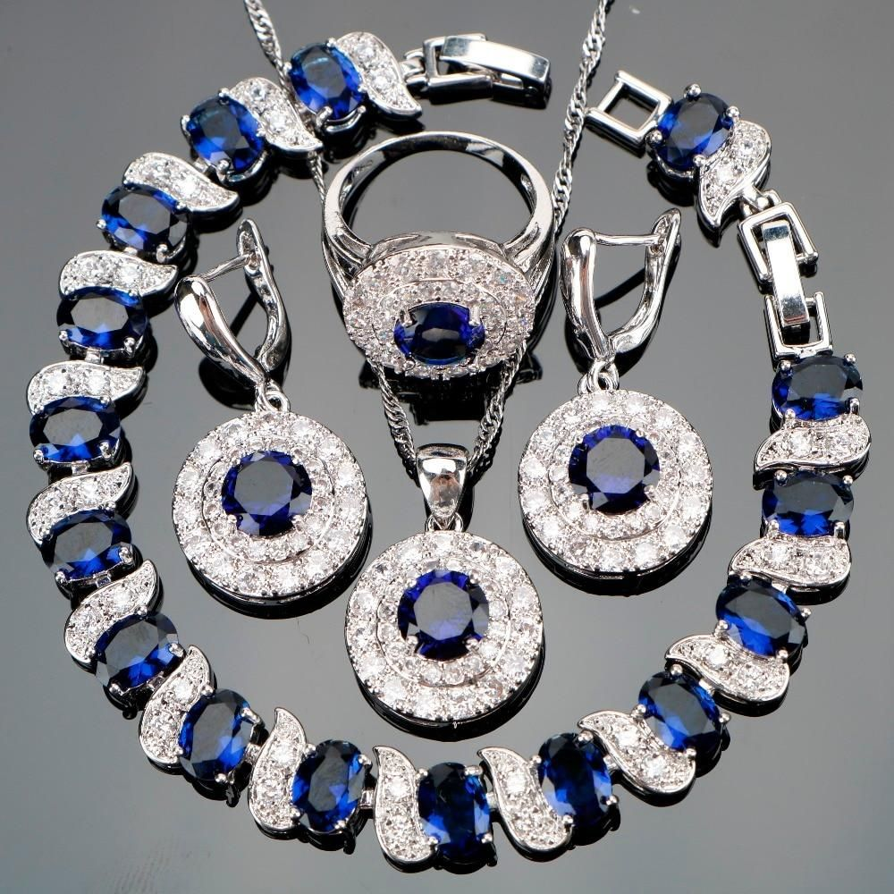Zircon is widely used in all forms of jewelry, including rings, necklaces, earrings, bracelets, and pendants. Its wide color range and brilliant sparkle make it a versatile choice for both classic and modern designs. Colorless zircon, in particular, has been used as an affordable alternative to diamond.
Collectibles and Investments
High-quality and rare zircon specimens, such as red and green varieties, are sought after by gemstone collectors and can serve as valuable investment pieces.
Scientific Research
Due to its durability and resistance to chemical alteration, zircon crystals can survive geological processes and provide valuable information about the Earth's formation and history. Radiometric dating of zircon has been instrumental in understanding the age of rocks and geological events.
Industrial Applications
Zirconium, derived from zircon, is used in various industrial applications, including ceramics, refractory materials, and as an opacifier in glazes. It is also utilized in the production of nuclear reactor components due to its low neutron absorption properties.
History of Zircon
Zircon has a rich and storied history that spans numerous cultures and centuries:
- Ancient Times: Zircon has been known since antiquity, with references found in ancient Hindu texts describing a gemstone called "hyacinth," believed to be zircon. It was used in jewelry and amulets, thought to bring prosperity, honor, and wisdom.
- Middle Ages: During the Middle Ages, zircon was believed to induce sound sleep, drive away evil spirits, and promote riches, honor, and wisdom. It was often worn by travelers as a protective talisman.
- Victorian Era: Zircon gained significant popularity during the Victorian era, particularly colorless zircon, which was widely used as a diamond substitute in jewelry. The gemstone was favored for its brilliance and affordability.
- Modern Times: Today, zircon continues to be appreciated for its beauty and versatility in jewelry. Advances in gemstone treatment techniques have expanded the range of available colors, particularly blue zircon, which has become highly popular in contemporary designs.
Unusual Varieties of Zircon
Cat's Eye Zircon
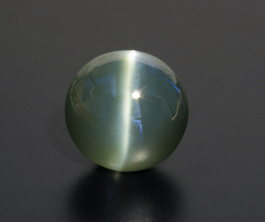Exhibiting chatoyancy, this rare variety displays a luminous band reminiscent of a cat's eye, caused by parallel needle-like inclusions within the stone. Cat's eye zircon is typically cut en cabochon to enhance this optical effect.
Star Zircon
Even rarer than cat's eye, star zircon shows asterism, a star-like pattern on the surface of the stone when viewed under direct light. This phenomenon is caused by intersecting needle-like inclusions and is highly prized by collectors.
Color-Change Zircon
This uncommon variety exhibits different colors under varying lighting conditions, typically shifting from greenish in daylight to reddish under incandescent light. The color-change effect adds a unique and desirable quality to the gemstone.
Enhancement of Zircon
Various treatments are applied to zircon to enhance its color and overall appearance:
- Heat Treatment: The most common enhancement method, heat treatment, is used to improve or change zircon's color. For example, heating brown zircon can produce vibrant blue or colorless stones. This treatment is stable and widely accepted in the gemstone industry, but should be disclosed to buyers.
- Irradiation: Irradiation followed by heat treatment can produce a range of colors, including golden yellow, red, and blue. While the treatment is generally stable, some irradiated stones may exhibit residual radioactivity and require careful handling and storage until safe.
- Bleaching: Used primarily on brown or reddish-brown zircon, bleaching can lighten the stone's color and improve its appearance. This treatment is less common and should be disclosed to buyers.
Famous Finds and Zircon
The Longido Zircon
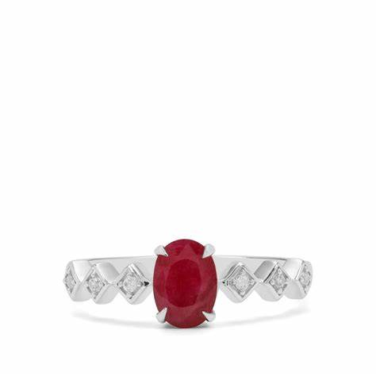Discovered in Tanzania, this exceptional red zircon weighs over 200 carats and is renowned for its rich color and remarkable clarity. It is one of the largest and finest red zircons known.
The Matara Zircon
Originating from Sri Lanka, the Matara zircon is a famous colorless specimen known for its exceptional brilliance and size. It has been showcased in various gemstone exhibitions and is celebrated for its diamond-like qualities.
The Australian Giant Zircon
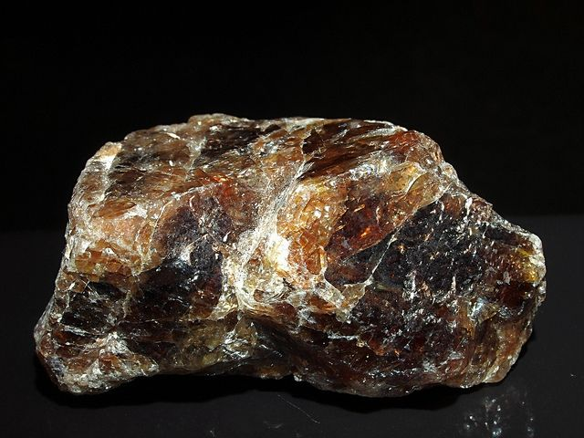Found in Australia's Northern Territory, this enormous brown zircon crystal weighs over 3 kilograms and is notable for its impressive size and well-formed crystal structure.
The Jack Hills Zircon
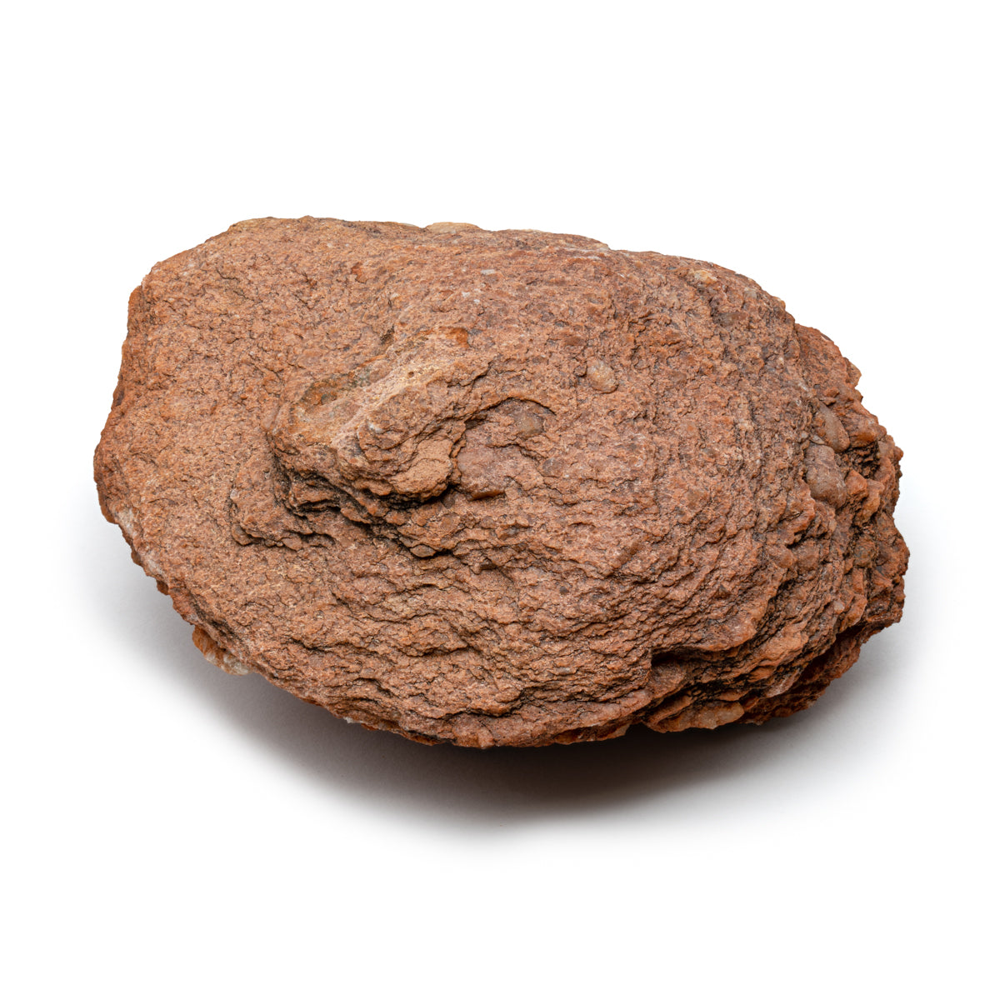The Jack Hills Zircon, found in Western Australia, is one of the oldest minerals on Earth, dating back over 4.4 billion years. This zircon crystal has played a crucial role in understanding the early history of the Earth’s crust.
The Russian Blue Zircon
Russia is known for producing some of the finest blue zircons, with deep rich colors and exceptional clarity. Russian blue zircons are highly prized for their rarity and beauty.
The Cambodian Zircon Mines
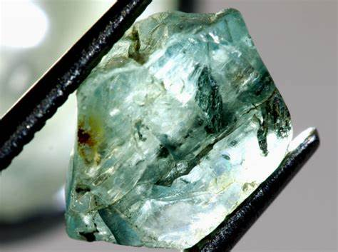Cambodia is a significant source of high-quality zircon, particularly in the Ratanakiri Province. Cambodian zircons are known for their vibrant blue and green colors, making them popular in the global gemstone market.
Sourcing Locations and Mining
Zircon is found in various locations worldwide, each producing stones with distinct characteristics:
- Sri Lanka: Known for producing high-quality colorless and yellow zircons, Sri Lanka has been a significant source of zircon for centuries. The country's gem gravels yield stones renowned for their clarity and brilliance.
- Cambodia: Cambodia, particularly the Ratanakiri province, is famous for its vibrant blue zircon, often produced through heat treatment. Cambodian zircons are valued for their rich color and good clarity.
- Australia: Australia is a major source of zircon, with deposits found in Western Australia and the Northern Territory. Australian zircons are typically brown to reddish-brown and are often heat-treated to produce blue and colorless varieties.
- Tanzania: Tanzania produces a range of zircon colors, including rare and valuable red and green stones. The Umba Valley is a notable mining area, yielding high-quality zircons.
- Myanmar (Burma): Myanmar is known for producing fine quality zircon in various colors, including honey-yellow and red. Burmese zircons are esteemed for their color saturation and clarity.
Where to Find Zircon in the United States
The United States, particularly Utah, Virginia, and South Carolina amongst other states, is a major source of Zircon. Use our gemstone and crystals map to locate different Zircon locations across the United States.
Exploration and Mining
Exploration
Geological surveys and sampling are conducted to identify zircon-rich areas, often focusing on igneous and metamorphic rock formations, as well as alluvial deposits where zircon accumulates due to its high density and resistance to weathering.
Mining Methods
Zircon is typically mined through open-pit and alluvial mining techniques. In alluvial mining, sediment is processed to separate heavy zircon crystals from lighter materials using gravity separation methods like sluicing and jigging.
Processing
After extraction, zircon rough is cleaned and sorted based on color, size, and clarity. Heat treatment may be applied to enhance color before the stones are cut and polished for use in jewelry or industrial applications.
Identifying Authentic Zircon
Authenticating zircon involves assessing various physical and optical properties:
- Refractive Index: Zircon has a high refractive index (1.92 - 1.98), which can be measured using a refractometer to distinguish it from other gemstones.
- Double Refraction: Zircon exhibits strong double refraction, causing a doubling of back facets when viewed through the table of the stone. This property helps differentiate zircon from diamonds and other similar-looking gems.
- Density: The high density of zircon can be used as an identification factor, as it feels heavier than other gemstones of similar size.
- Spectroscope Analysis: Examining zircon under a spectroscope reveals characteristic absorption lines that aid in identification.
- UV Fluorescence: Some zircon varieties exhibit weak fluorescence under ultraviolet light, which can assist in identification but is not a definitive test.
- Professional Certification: High-quality and valuable zircon specimens should be accompanied by certification from reputable gemological laboratories, providing detailed information about the stone's characteristics and any treatments applied.
Buy & Sell Authentic Zircon Here
Cutting and Polishing Zircon
Proper cutting and polishing are essential to maximize zircon's inherent brilliance and fire:
- The Cutting Process: Due to zircon's brittleness and distinct cleavage, experienced cutters must carefully plan and execute cuts to prevent damage and maximize optical performance. Common cuts include round brilliant, oval, pear, and emerald, which showcase the stone's sparkle effectively.
- Polishing: Zircon requires meticulous polishing to achieve its signature high luster and brilliance. Skilled lapidaries use fine abrasives and precise techniques to produce a flawless reflective surface.
- Faceting: Well-executed faceting enhances zircon's dispersion and fire, making the gemstone appear lively and captivating. Attention to symmetry and proportion is crucial in achieving optimal visual appeal.
- Cabochon Cutting: Opaque and heavily included zircon, as well as chatoyant and asteriated varieties, are often cut en cabochon to highlight their unique optical effects.
Zircon Market and Trade
The zircon market is influenced by factors such as color, clarity, origin, and treatment:
- Value Determinants: The most valuable zircons are those with vivid, saturated colors (especially blue, red, and green), high clarity, and excellent cutting. Untreated stones typically command higher prices, though well-treated stones are also widely accepted.
- Global Trade: Sri Lanka, Cambodia, and Australia are key players in the global zircon trade, supplying high-quality gemstones to markets worldwide. Demand is strong for both jewelry-grade stones and industrial-grade zirconium products.
- Market Trends: Blue zircon remains the most popular variety in the jewelry market, appreciated for its vibrant color and diamond-like sparkle. There is also growing interest in rare colors such as red and green, as well as in natural untreated stones.
- Ethical Sourcing: Increasing consumer awareness of ethical and sustainable sourcing practices has led to greater scrutiny of mining operations. Responsible sourcing and transparency in the supply chain are becoming important considerations for buyers and sellers alike.
Buy & Sell Authentic Topaz Here
Caring for Zircon
Proper care and maintenance are essential to preserve zircon's beauty and longevity:
- Cleaning: Clean zircon jewelry using warm soapy water and a soft brush or cloth. Ultrasonic and steam cleaners should be used with caution, especially on heavily included or heat-treated stones.
- Storage: Store zircon separately from other gemstones to prevent scratches and damage. Use soft pouches or lined jewelry boxes to protect the stones from dust and abrasion.
- Handling: Avoid exposing zircon to harsh chemicals, extreme temperatures, or prolonged sunlight, as these conditions may affect the stone's appearance and durability. Remove zircon jewelry during activities that may subject it to knocks or pressure.
- Regular Inspection: Periodically inspect zircon settings and mountings to ensure the stones are secure and undamaged. Promptly address any issues with the help of a professional jeweler.
Metaphysical Properties of Zircon
Zircon has been attributed with various metaphysical properties throughout history:
- Prosperity and Success: Zircon is believed to attract wealth, prosperity, and success, making it a favored talisman for those seeking financial growth and professional advancement.
- Wisdom and Insight: The gemstone is thought to enhance mental clarity, promote wisdom, and facilitate spiritual growth. It is often used in meditation practices to deepen understanding and intuition.
- Emotional Healing: Zircon is said to help release negative energies and alleviate feelings of stress, anxiety, and depression. It is believed to promote self-confidence, compassion, and emotional balance.
- Physical Healing: Some practitioners associate zircon with physical healing properties, including boosting energy levels, strengthening the immune system, and supporting the health of the liver and lungs.
- Chakra Alignment: Different colors of zircon are associated with various chakras; for example, blue zircon is linked to the throat chakra, enhancing communication, while clear zircon is connected to the crown chakra, promoting spiritual enlightenment.